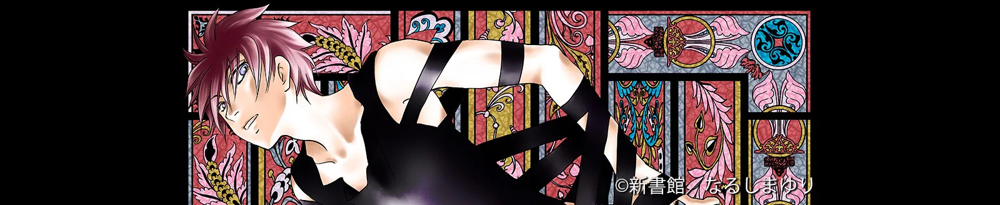
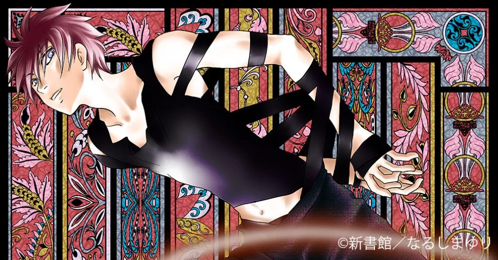
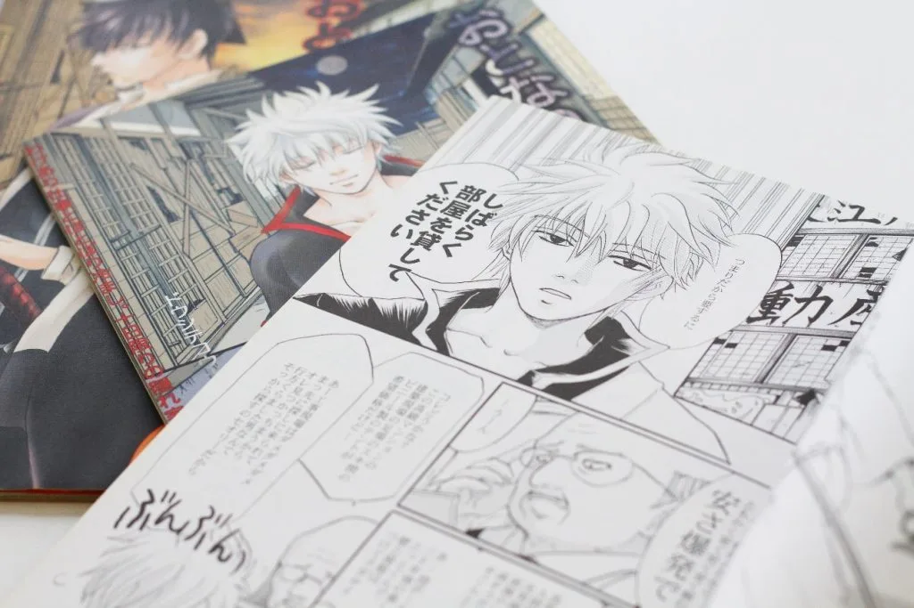
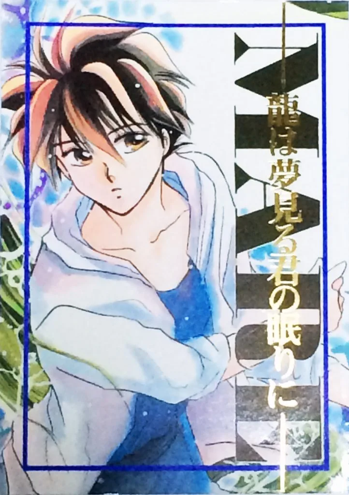
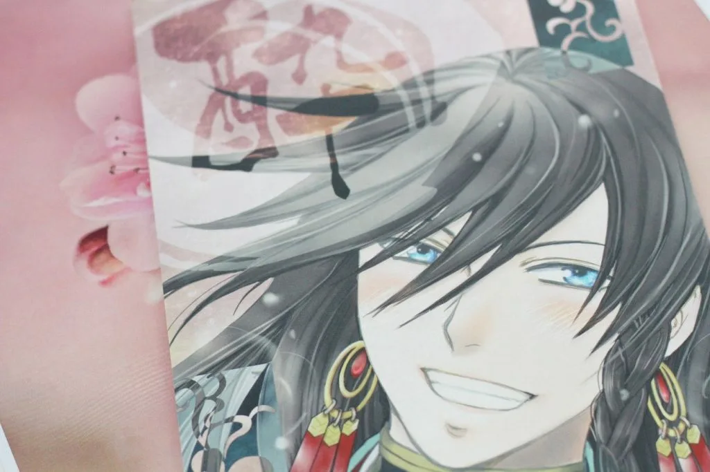
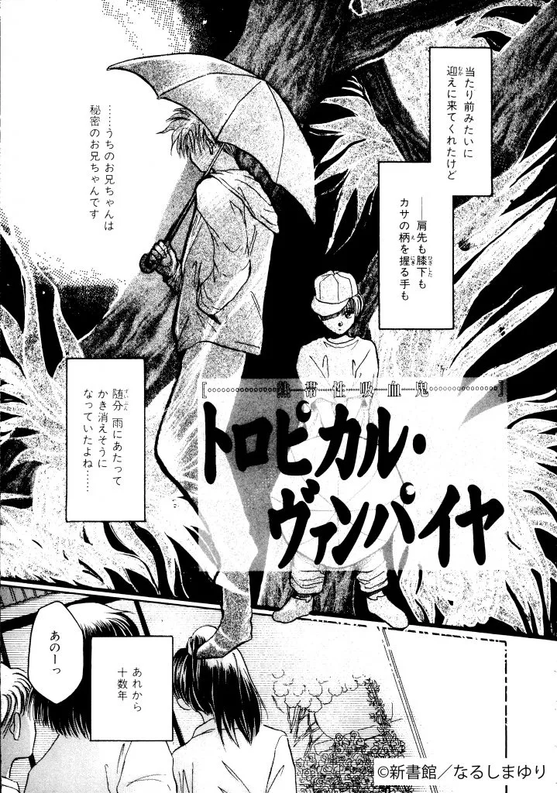
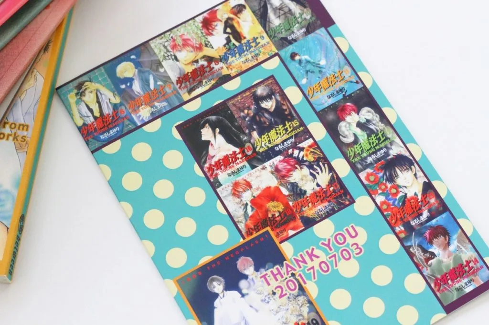
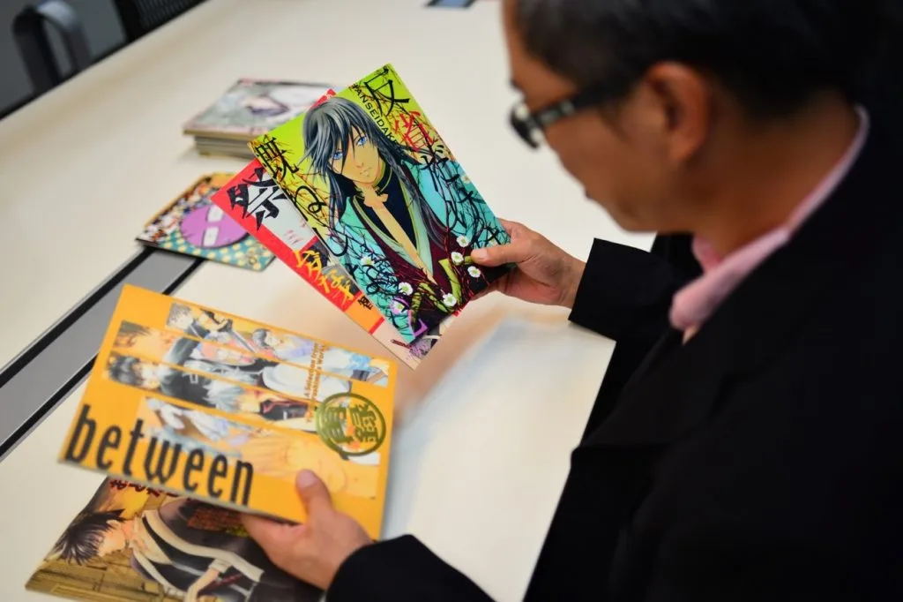

HOPE TALK
第一線で活躍するクリエイターたちは、一体どのようにして自身のキャリアを切り拓いてきたのでしょうか。
現役のクリエイターたちを招き、彼らを「印刷会社」という立場から支えるホープツーワンの熟練社員、出口竜がその秘密に迫る対談企画「ホープトーク」。
今回のゲストは、漫画家のなるしまゆりさんです。同人誌でキャリアをスタートさせたなるしまさんは、1994年に新書館で商業誌デビュー。
思想や哲学を含んだ独特の作風で“鬼才”と称されるなるしまさんですが、そこには意外な葛藤と、漫画に対する独自の考え方がありました。
なるしまゆり
1994年に新書館で商業誌デビュー。
これまでに、新書館から発行されている隔月刊漫画雑誌「ウィングス」で連載中の「原獣文書」や、2016年に完結した「少年魔法士」をはじめ、集英社から全７巻刊行された「プラネットラダー」など、多くの名作を発表。
性別を問わず、多くのファンを持つ実力派作家。
 出口竜
出口竜
本社工場勤務。入社二十云年。製本を経験してから印刷へ。主に表紙多色刷を担当し、その後製版も学ぶ。
以下、質問は出口、回答はなるしまゆりさんです。
目次
・絵は今も昔も苦手？
・就職の内定を断って漫画家の道へ
・初入稿は仙台まで新幹線で届けました（笑）
・デビューしてすぐに訪れた「壁」
・100人中の1人のために
・プロとしての成功を導く”踏ん張りどころの3年間”
・まとめ

絵は今も昔も苦手？
—なるしまさんが絵を描き始めたのはいつ頃からですか？
「小学校の頃からですね。ファーストガンダムとか、当時好きだったアニメのパロディを遊びの延長で描くようになりました。でももともと絵は苦手だったんですよ。絵がうまい子って大体クラスの中に1人はいると思いますが、私はそういう存在ではなかったです。」
—そうなんですか？それはかなり意外です。
「私は絵を描くのが好きで漫画を始めたというよりも、好きなアニメや小説から連想した別の詩や物語に挿絵をつけるという感覚で絵を描いていました。だから、お話を考えることが好きで、絵はそれを表現するための手段のひとつという感じ。今も一枚のイラストを描くのは苦手です。」
—絵が苦手だったなるしまさんが、それでも漫画が好きだった理由は？
「自分の“妄想”を表現できるのって、漫画しかないんですよ。例えば、本を読んだり映画を観たり音楽を聴いたり、現実で何か琴線に触れることがあると「あーこのシチュエーションに合う、こういう話があったらいいな」とか思うんです。同人誌で描いていた有名漫画のパロディ作品も「あのキャラクターは死んじゃったけど、生きてたらどうなっていたんだろう」と、本作で描かれていないストーリーの裏側を考えてみたり…完全な妄想から生まれるんです（笑）「絵が苦手なら、小説を書けばいいんじゃない？」って言われることもあるんですけど、私の妄想の世界は活字表現の世界ではなく、キャラクターがいて、空があって、草があって、トーン貼って削って……うーん。漫画なんです（笑）」

▲なるしまさんのユニークな妄想から生まれた同人作品の数々。
—それは面白い。なるしまさん独自の発想ですね。
「絵が上手い事と、漫画を続けることって関係ないんだなあと、つくづく思った事もあります。周りの絵がうまい子達が、洋楽にハマったり、演劇に興味が移ったり、別のことに夢中になって、漫画をやめちゃうんですよ。気付けば私だけが描き続けてました。何で、よりによって画力が下から数えたほうが早かったような私？と（笑）」
就職の内定を断って漫画家の道へ
—デビューのきっかけを教えてください。
「就職しようかどうしようか……でも漫画も描き続けたい……と将来に迷っていた頃、同人誌を見た新書館の方から声をかけてもらい、デビューの機会をいただきました。そのとき、実は既にある会社から内定をもらっていたんですが、このチャンスを逃すわけにはいかないと思って入社を断り、漫画家になるぞと決意しました。内定先には菓子折りを持って謝りに行きましたよ（笑）確か、ホープツーワンさんに印刷を初めてお願いしたのもこの頃だったと思います。」
初入稿は仙台まで新幹線で届けました（笑）
—ということは、うちに初めて印刷を依頼していただいたのは1993年頃ですよね。恐縮ですが、ホープツーワンに依頼したきっかけは覚えてらっしゃいますか？
「覚えてますよ。当時ホープツーワンさんは「フルカラー表紙無料」というキャンペーンをやっていて、最初はそれに惹かれてお願いしました。でも最初から原稿の仕上がりが遅れてしまって…いきなりご迷惑をおかけしました（笑）担当者の方に連絡したら「郵送だと印刷に間に合わないから、私がいる仙台のイベント会場まで届けてほしいです！」と言われて、仙台まで新幹線で届けました（笑）それがホープツーワンさんの初入稿で…忘れもしません（笑）」

▲「MARE -龍は夢見る君の眠りに-」は、なるしまさんとホープツーワンの出会いとなった作品。入稿時のエピソードもあり、当時印刷を担当した出口にとっても思い入れの強い作品。
デビューしてすぐに訪れた「壁」

—漫画家として「壁」に当たったことはありますか？
「もちろん、あります。商業誌でデビューの話をいただいたとき、出版社の方にも「何でもいいので好きなものを描いてください」と言われて、いきなり自由に漫画を描けるチャンスをいただきました。それなのに、いざ筆をとると不思議なことに全く描けなくなってしまったんですよ。子どもの頃から漫画を読んで育ち、大好きな作品の影響を受けながら「私もこういう作品を描きたい」と漫画家を志しましたが、実際に自分が憧れていた漫画家としてデビューする立場になったとき、今自分の中にあるものが＝本当に自分が描きたいものなのか・本当に自分の中から出てきたものなのか、わからなくなってしまったんです。」
—プロの漫画家として、自分の存在価値に疑問を持ってしまったわけですね。
「そうですね。例えばお医者さんとか弁護士さんとか料理人さんといった職業は、誰かに役に立っていることがハッキリ実感できると思いますが、漫画は生活の中で役に立つものではなく、ただの娯楽じゃないですか。ましてや、人に勇気や生きる力を与えるようなストーリーならまだしも、自分の作風はそういうものではないので「私が本当に描きたいものって何だろう。そして、それが誰になんの意味があるのだろう」と、すごく悩みました。でも就職を断った手前、後に引けないっていう（笑）このことは、今もよく考えますね。」

▲デビュー作「トロピカル・ヴァンパイヤ」。悩みや葛藤の中でも独特の作風に揺るぎは見られない。
100人中の1人のために
—先ほどうかがったなるしまさんの葛藤は“作風が決してメジャーなものではないが故”ということもあるのでしょうか。ファンの方からすると、そこが大きな魅力だと思います。
「私の作品は『正義が悪を倒す』とか、そういった分かりやすい快感原則があるものではないので、100人中100人に楽しんでもらえるものではありません。でも、葛藤しながらこれまで続けて実感できたのは『自分の作品に共感してくれる人はいる』ということです。作品と読む人の心のチャンネルが合い、キャラクターに自分の境遇や心境を投影して、何か励みにしてくれたりする読者の人がいてくれたから、私はここまで続けてこられました。」
—100人中1人に届けば、1000人中10人に届き、10000人中100人に届く。継続することで実感が?めたわけですね。
「そうですね。それを考えると、若くて才能があるのに、なかなか発表しなかったり、少し世に出したら止まってしまう人も多い気がしていて、見ていて少し残念に思ったりしています。もちろん当てはまらない人も多いのですが、意外にいるようにも思います。」

▲なるしまさんのイベントで配布されたおまけ本。読者想いのなるしまさんの粋なプレゼント！
プロとしての成功を導く”踏ん張りどころの3年間”
—若いクリエイターが作品を発表しないというのは、一体なぜだと思いますか？
「私が壁にぶつかったときもそうだったのですが、他人の評価を気にし過ぎたり、納得いくクオリティに達するまでは恥ずかしいと臆病になったりしているのではないでしょうか。長く描いていると、そういう壁には何度もぶつかります。でも、もっと早い段階から、ネットで、気軽に大勢の人が自分の作品を発表できる環境になっているのと同時に、そういった情報の質量に萎縮してしまいがちなシャイな人もいるような」
—そんな若きクリエイターたちに対して、何か伝えたいことはありますか？
「とにかく、どんなものでもいいのでまずは描いて、発表してほしいです。若い人には、『今描け！』『今出せ！』と。若い頃にしか生み出せない作品が必ずあります。私も昔描いた作品は今見返すと「よくこんなの出したな」と思いますが（笑）それと、多分誰にでも、3年間くらいなりふり構わず頑張らなければいけないときがあると思うんです。その3年で、その後の描き手としての寿命が変わるような時期が。新しい刺激に出会ったときとか「今だ！」っていうタイミングは、きっと自分で気付けるはず。伸び代がある時期というか“ノッている時期”だと思うので、そこで描く癖をつける事が、とても大事だと思います。」
▲今回の取材でなるしまさんが持参してくださった数々の作品。どれも美しく愛情に溢れていました。
まとめ

技術の発展とともに、より自由な表現が可能になった今、なるしまさんのように、「自己表現」と「他人の評価」の狭間で揺れるクリエイターはさらに増えているのかもしれません。今も葛藤を繰り返していると笑うなるしまさんですが、この2つだけは力強く語っていました、
『とにかく描き続けること』
『発表し続けること』
シンプルですが、強烈なメッセージでした。今クリエイターを目指しているあなたにもきっと「踏ん張りどころの3年間」が訪れるはず。もしかしたら今かも？？そのときは、なりふり構わず全力ダッシュです！
なるしまゆり先生
1994年に新書館で商業誌デビュー。
これまでに、新書館から発行されている隔月刊漫画雑誌「ウィングス」で連載中の「原獣文書」や、2016年に完結した「少年魔法士」をはじめ、集英社から全７巻刊行された「プラネットラダー」など、多くの名作を発表。
性別を問わず、多くのファンを持つ実力派作家。